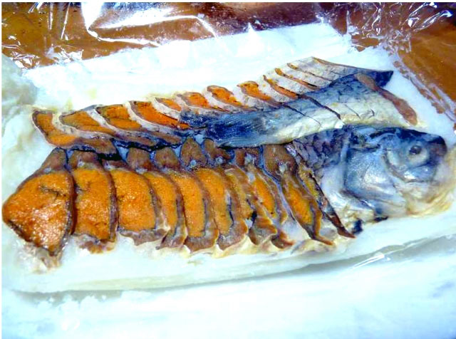
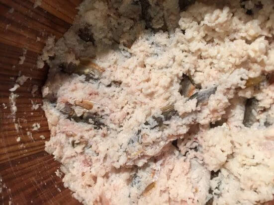
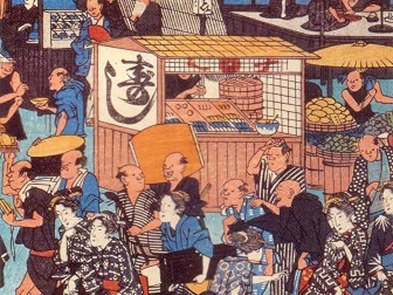
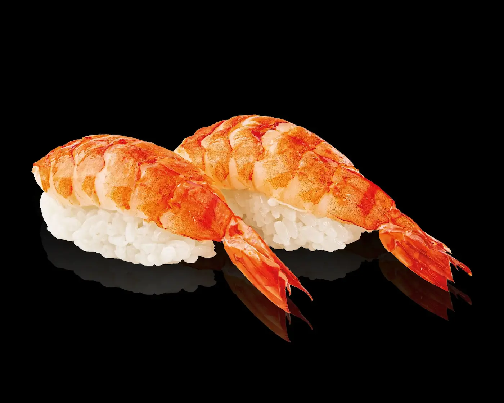
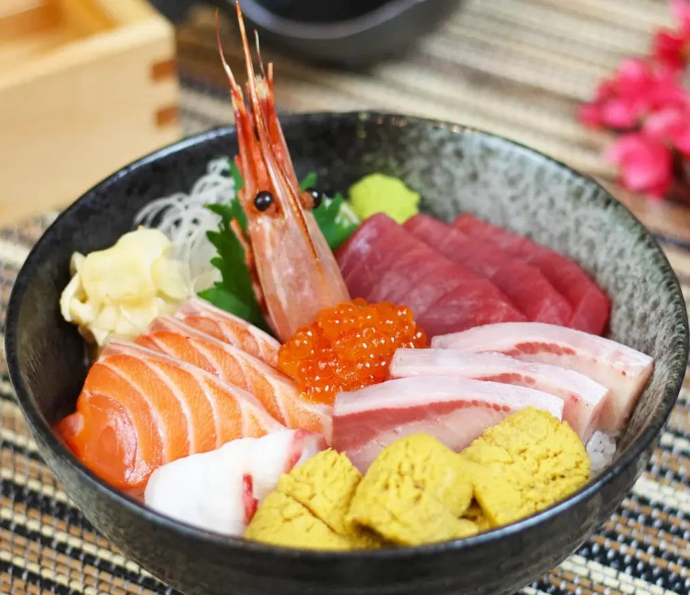
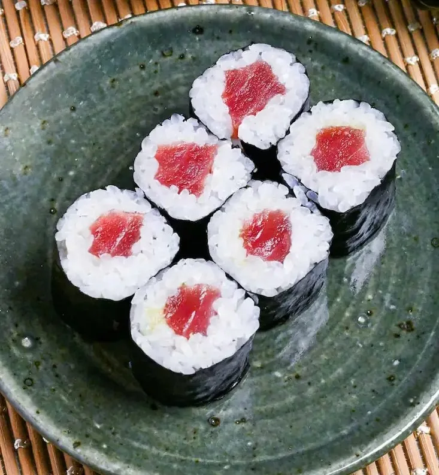

A History of Sushi: The Early Years (1336-1867)
This site explores the fascinating journey of sushi from its humble beginnings as survival food, and into the modern-day variations that we know today. A culinary heritage which is now renowned internationally as some of the most luxurious and sought-after dishes.
Sushi's Humble Beginnings
Sushi began as a method of preserving fish when food was very scarce using vinegar, salt and rice. The rice was at first thrown away, as the fermentation was done for months at a time which made it unsafe for human consumption. This practice originated in South-Eastern Asia, later in China, and was later introduced to Japan in the Muromachi period which was between 1336-1573.
This was the earliest form of sushi which was called "Narezushi" later in this period the Japanese began to experiment with shorter fermentation times, which led to sushi's first change called "Namanare". This was a partial fermentation which meant the fish could be eaten with the rice.
Only until the Edo Period of Japan, which spans the years (1603-1867) did sushi start to evolve from a survival food, into a fast food, then a new term, coined "haya-zushi" came into being. "Haya" meaning "fast" in Japanese. This process gave birth to the sushi we have come to know in the modern era.
Due to this change, rice was only seasoned with rice-vinegar and salt which allowed for it to be served "as-is" along with the fish and sold on the street by vendors. This strategy, in tandem with their daily fish catches is what led to the popularization of sushi as a quick, convenient, and delicious meal option.
Below is a table showing the 3 most common "haya-zushi" that came out of this period and have become staples of this cuisine across the world.
| 3 Popular Haya-zushi Types | ||
|---|---|---|
| Nigirizushi | Chirashizushi | Makizushi |
|  |  |  |
| Fish placed on top of a hand-pressed ball of vinegared rice. | A sliced assortment of fish that rests over a bed of sushi rice within a bowl. | Fish wrapped inside of Nori (Seaweed) sheets and vinegared rice to create a roll. |
{kind=link}
{kind=link}
{kind=link}
{kind=link}
{kind=link}
{kind=link}